Tatsuno, Hyogo: things to do, food and stays
Tatsuno · Hyogo
Tatsuno
Highlighted on the Hyogo map.
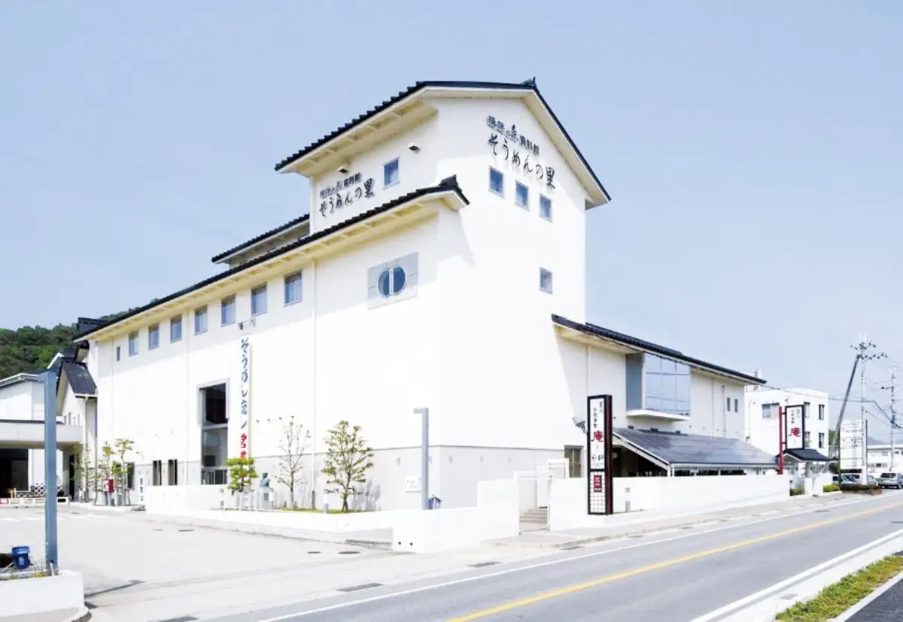
Stay
懐石宿 潮里
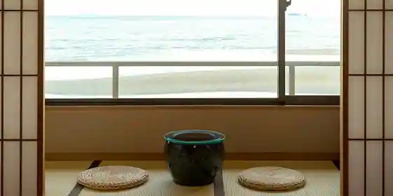
Kaiseki Yado Shio Sato
龍野城下町 町屋Villa kurasu villa69
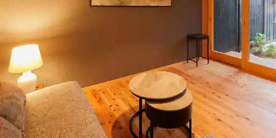
Tatsuno Jokamachi Machiya Villa kurasu villa69
龍野城下町 町屋Villa kurasu
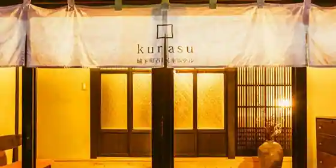
Tatsuno Jokamachi Machiya Villa kurasu
Inn in Tatsuno with one group per day.
リブマックスリゾート瀬戸内シーフロント
Ribumakkusu Resort Setochi Shifuronto
Resort hotel at Notennen Onsen in Mito, Tatsuno with scenic views.
新舞子ガーデンホテル
Shinmaiko Garden Hotel
wad resort 千鳥亭
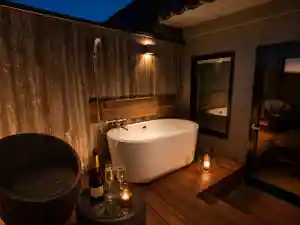
wad resort Chidori Tei
国民宿舎 志んぐ荘
Kokuminshukusha Kokorozashi Ngu So
片しぼ竹の宿・梅玉
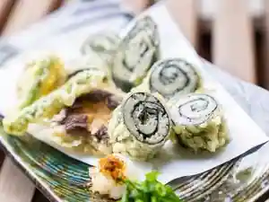
Hen Shibo Take No Yado Baigyoku
ファミリーロッジ旅籠屋・たつの店
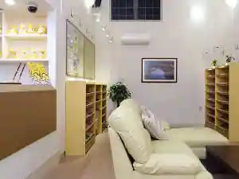
Famiri Lodge Hatago Ya Tatsuno
Mountain lodge in Tatsuno with breakfast available and family-friendly stays.
Tabist 二葉旅館 たつの
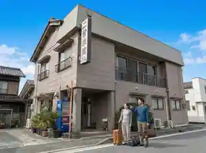
Tabist Futaba Ryokan Tatsuno
Ryokan inn in Tatsuno with a large communal bath.
町屋Villa kurasu villa 69
Machiya Villa kurasu villa 69
町屋 Villa Kurasu Villa148
Machiya Villa Kurasu Villa148
Dining
津田宇水産 レストラン
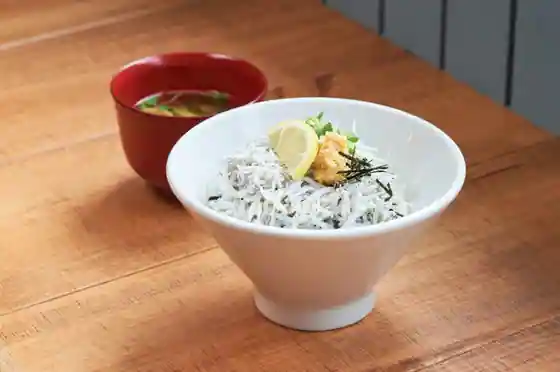
Tsuda U Suisan Restaurant
桃栗さんねん柿はちねん
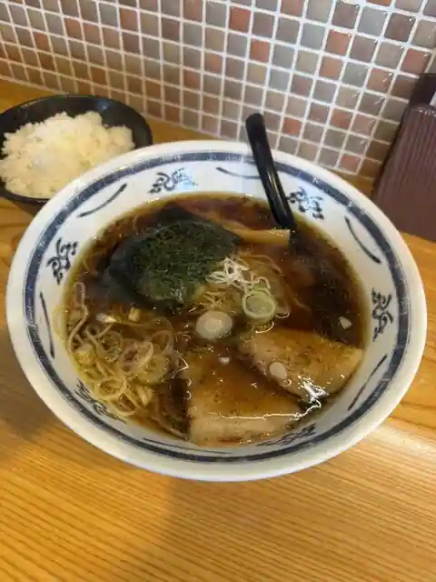
Momokuri Sannen Kaki Hachinen
ねぎとにんにく
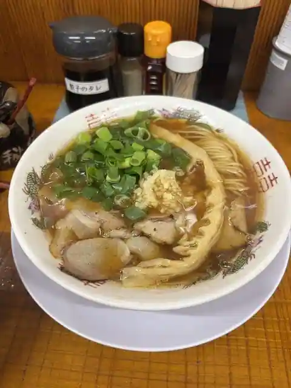
Negitoninniku
揖保乃糸 庵
Ibo No Ito Iori
道の駅 みつ シーサイドレストラン 魚菜屋
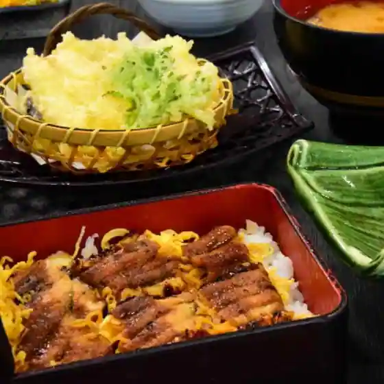
Michi No Eki Mitsu Shisaido Restaurant Gyosai Ya
そうめん処 霞亭
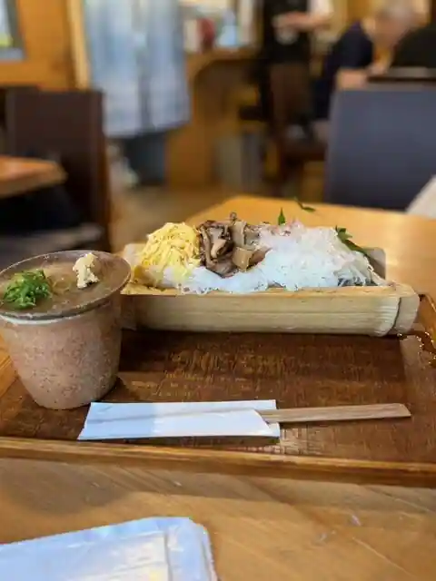
Somen Tokoro Katei
龍野西サービスエリア（上り線）スナックコーナー・フードコート
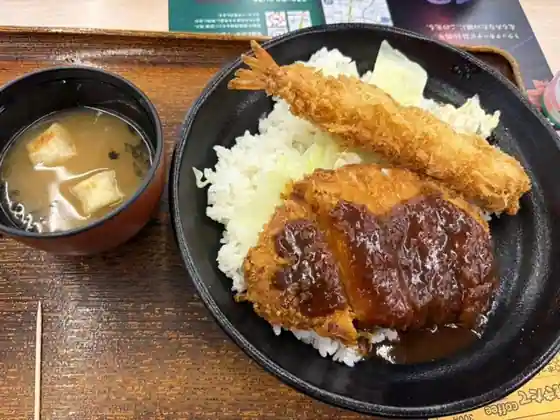
Tatsuno Nishi Sabisueria (Nobori Sen) Sunakkukona Fudokoto
菓子と珈琲 朔
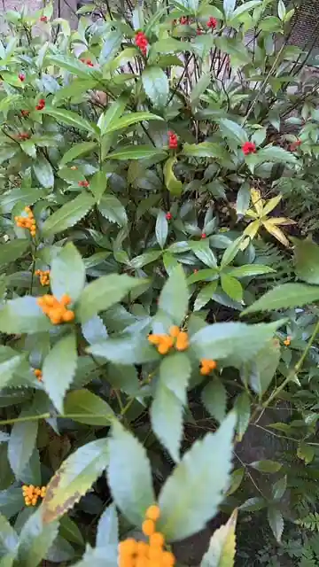
Kashi To Coffee Saku
クラテラスたつの
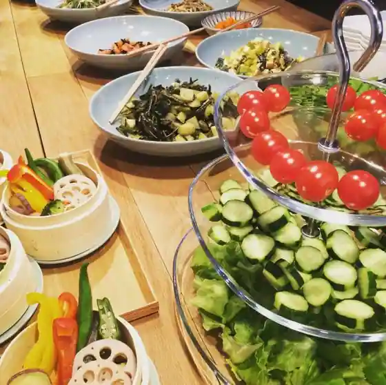
Kura Terrace Tatsuno
BUTTERFLY KNOT BAKERY
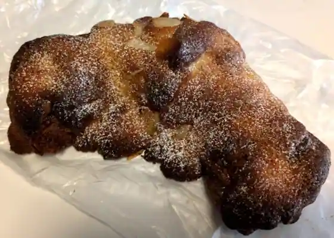
BUTTERFLY KNOT BAKERY
御菓子司 大黒屋丹治
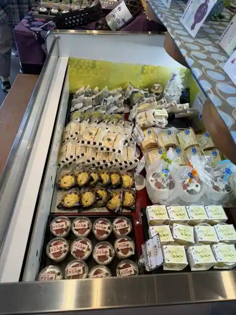
O Kashi Tsukasa Daikokuya Tanji
觜崎屋 本店
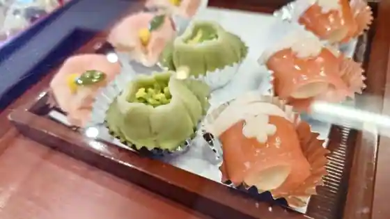
Hashi Saki Ya Hon
廻鮮寿し たいの鯛
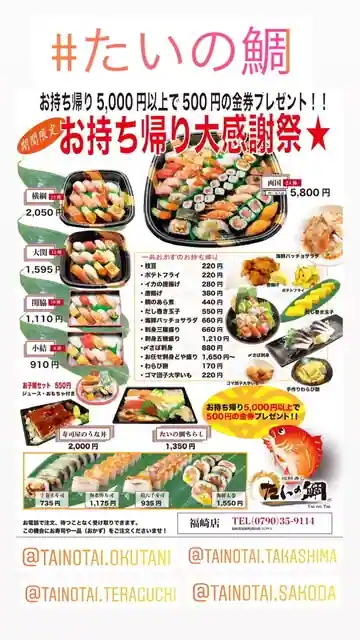
Kaisen Hisashi Shi Taino Tai
marica
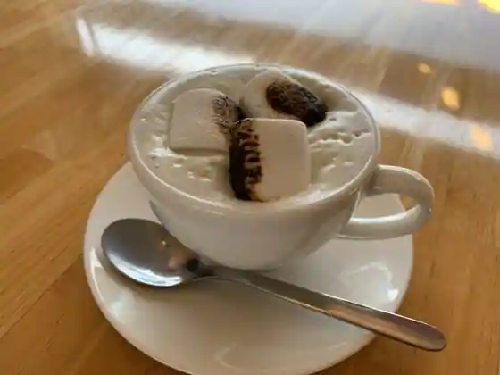
marica
まるよし
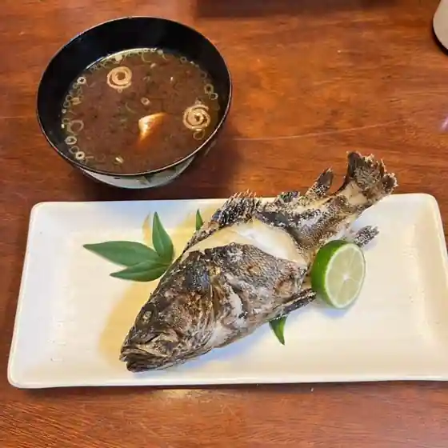
Maruyoshi
うかいや レストラン東相生店
Ukaiya Restaurant Higashi Aioi
カフェ ペリペリ
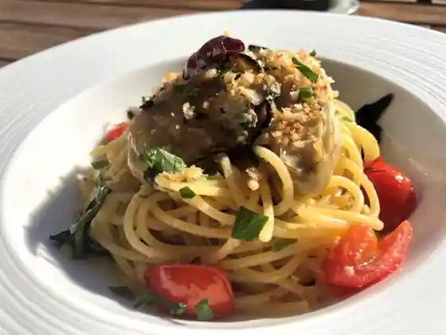
Cafe Periperi
播磨の里
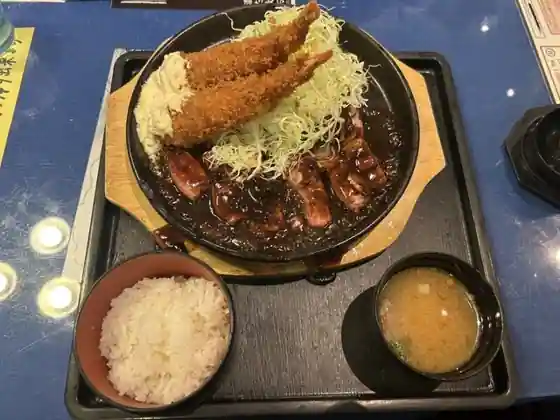
Harima No Sato
壱枚乃絵
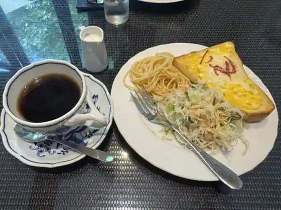
Ichimai No E
ＳＡＴＵＲＤＡＹ ＳＵＮ
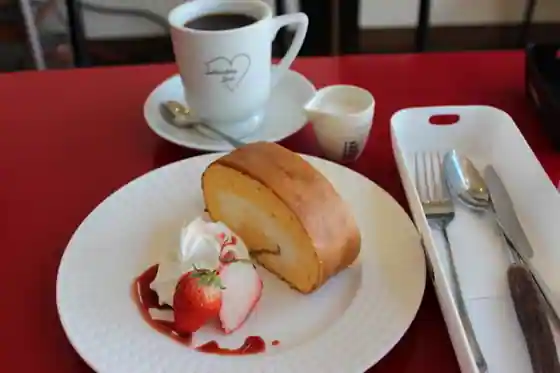
SATURDAY SUN
住栄丸
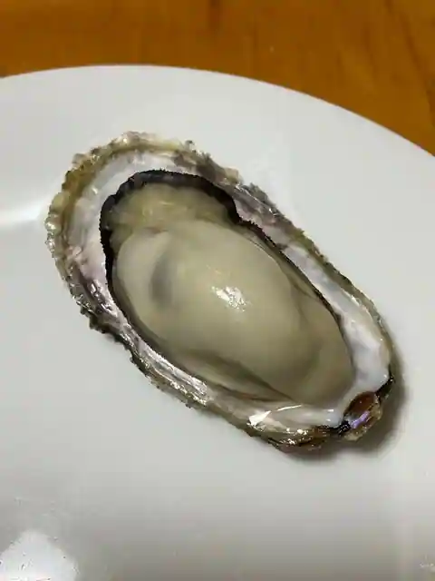
Ju Sakae Maru
御馳走ごはん あの頃
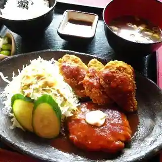
Gochiso Gohan Ano Goro
すくね茶屋
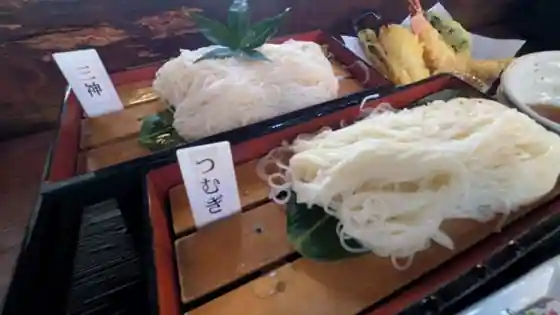
Sukune Chaya
Sights
Ibo no Ito Museum Somen Village